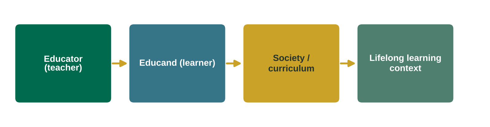
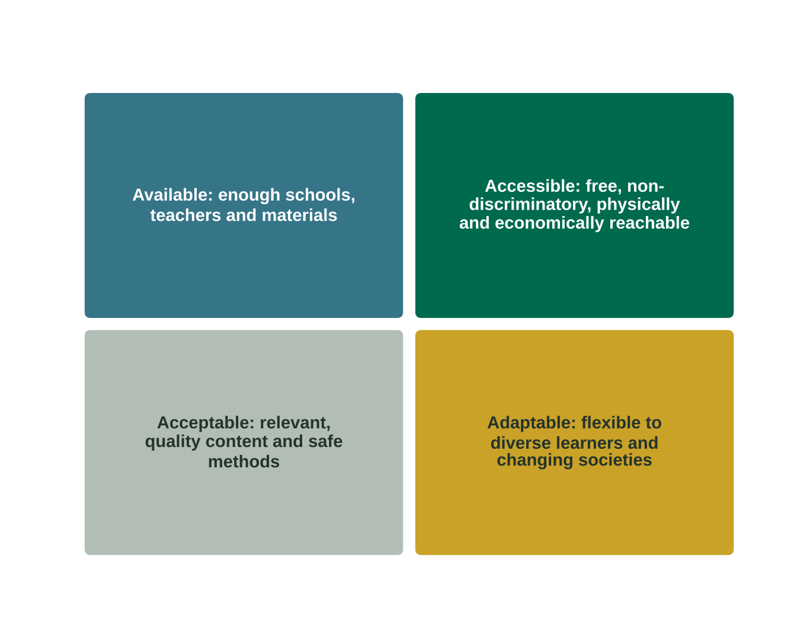
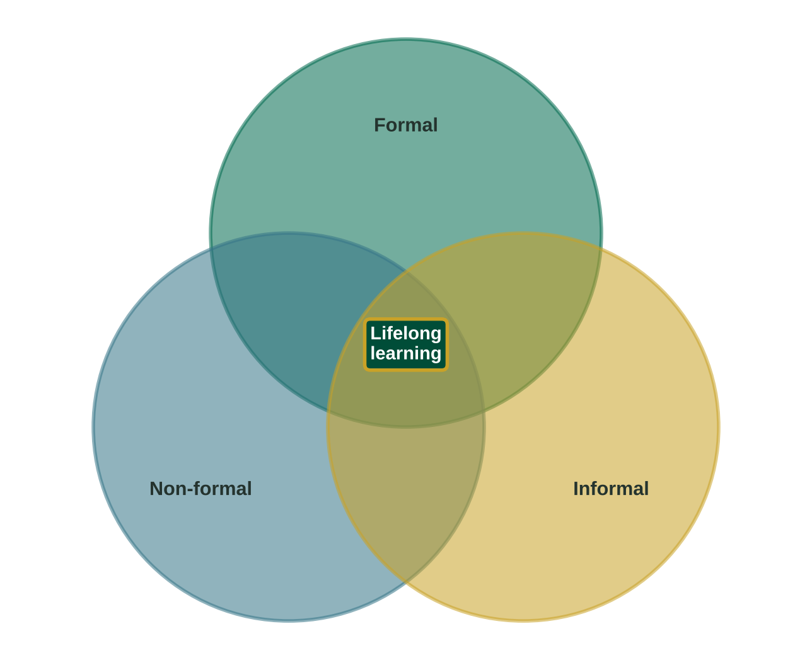
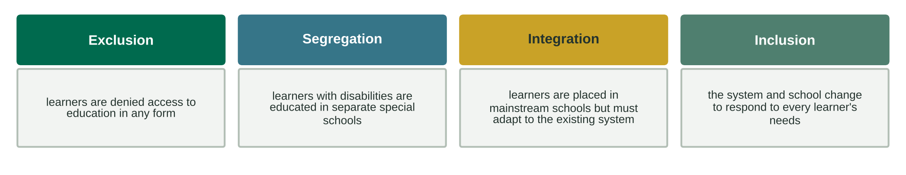
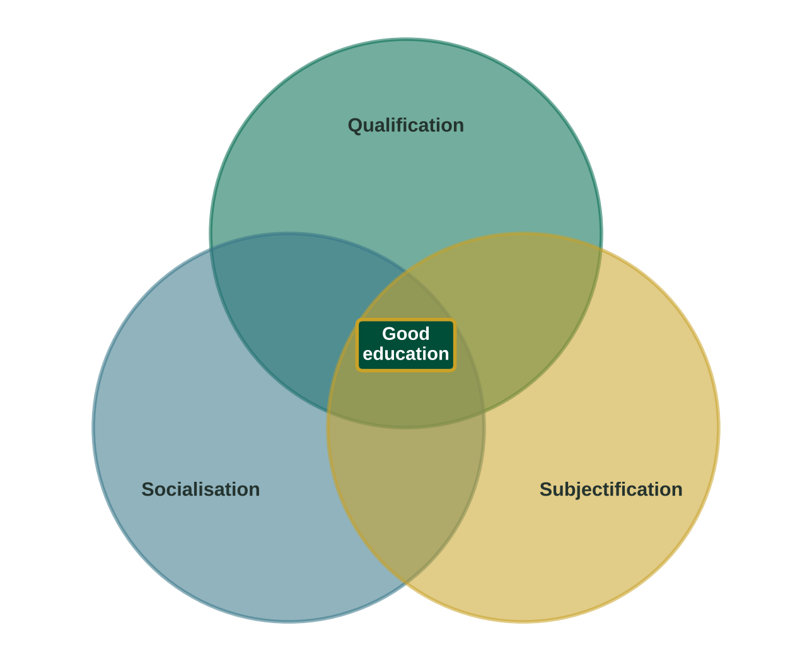
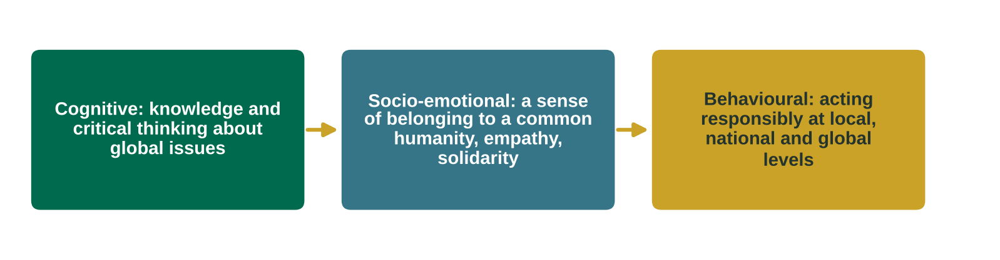
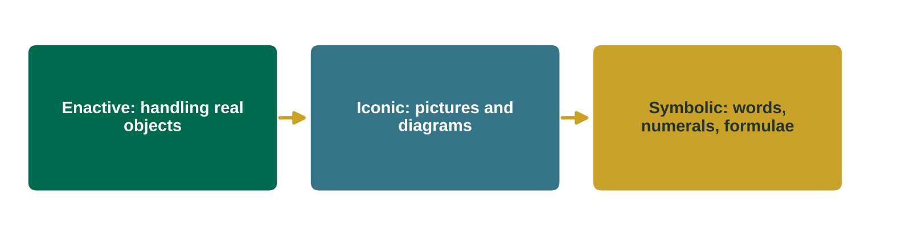
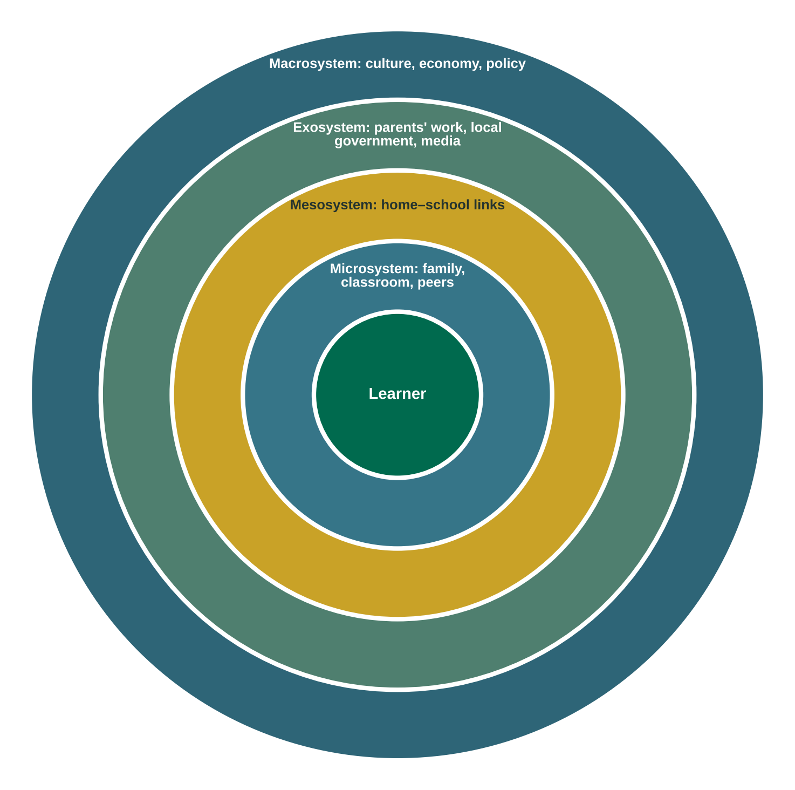
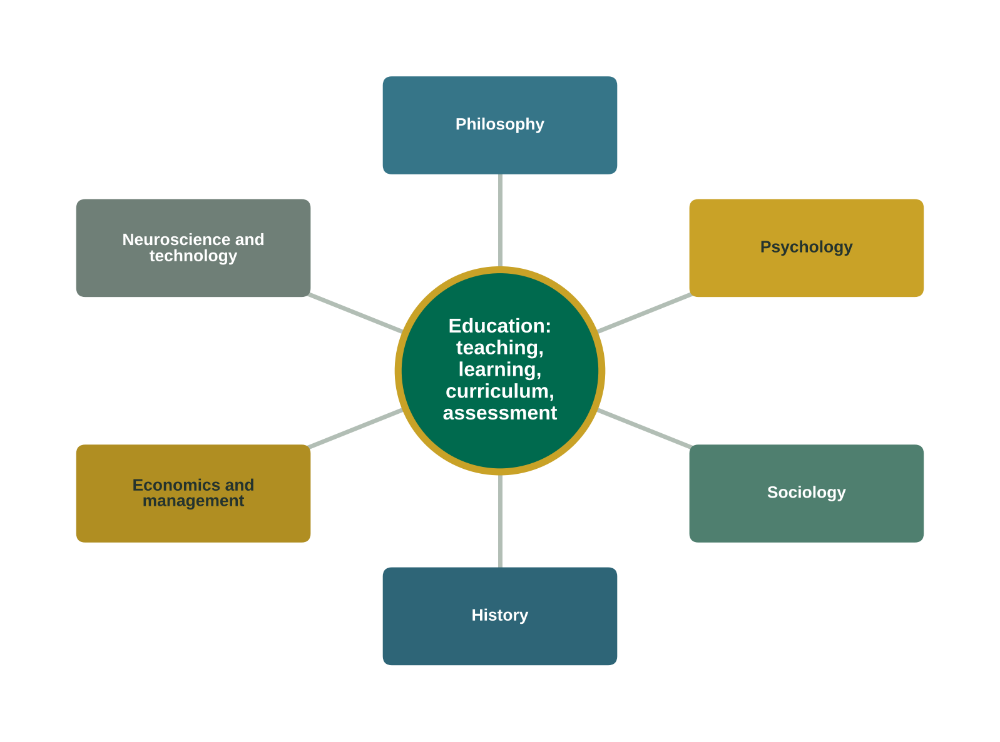
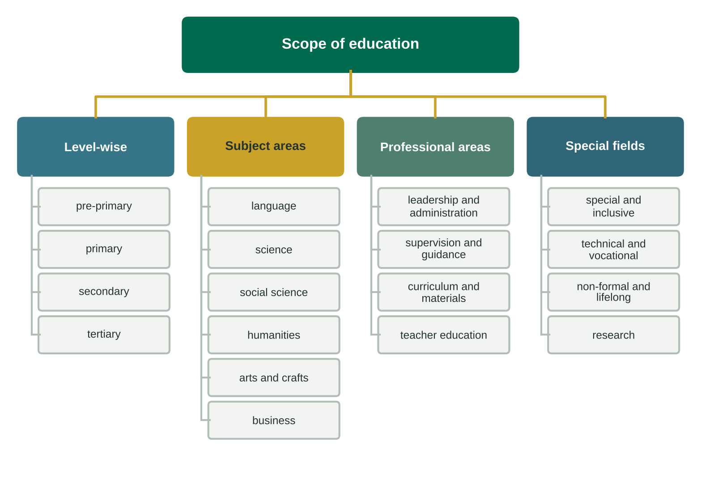

PC 111 Introduction to Education
Concepts, terminologies, aims, maxims, components and the disciplinary identity of education
Contents
About this course
This foundation course builds a precise vocabulary of education and a defensible understanding of what education is, what it is for, how it is organised and why it qualifies as an academic discipline. It links classical definitions (Plato, Rousseau, Dewey, Peters) with contemporary global frameworks (Education for All, SDG 4, Global Citizenship Education) and with Bangladesh's own constitutional and policy commitments.
Course objectives
Explain the concept and visions of "education" and commonly used educational terminology, and show how the terms relate to one another.
Describe the characteristics, components and rights-based foundation of education.
Analyse the aims, purposes and functions of education for individuals, democratic society and human resource development.
Justify education as an academic discipline and map its scope by level and by area.
Each unit follows the official syllabus order. Read the narrative first, then the Key point boxes, then test yourself with the Exam focus questions.
Golden boxes = must-remember ideas. Teal boxes = definitions and study tips. Green boxes = Bangladesh context.
The final chapter is a question bank (MCQs with answers, short and broad questions) in the style of university examinations, followed by full references in APA 7th style.
Statistics on enrolment, budgets and policies change every year. Before an exam, check the latest BANBEIS, DPE, UGC and UNESCO figures.
Unit 1: Concept of Education
Chapter summary
The English word education has three commonly cited Latin roots. Each one carries a different idea of what education does, so it is worth knowing all three for examinations and for opening an answer well.
This chapter covers: Origins and meaning of the word "Education"; Narrow and broad concepts of education; Definitions of education: perspectives and contexts; Characteristics of education; Education as a human right; Modes of education: informal, non-formal and formal.
Key terms:
- Formal education : The hierarchically structured, chronologically graded education system running from primary school through university, including specialised programmes and institutions for full-time technical and professional training.
- Non-formal education : Any organised educational activity outside the established formal system, operating separately or as part of a broader activity, that is intended to serve identifiable learning clienteles and learning objectives.
- Informal education : The truly lifelong process whereby every individual acquires attitudes, values, skills and knowledge from daily experience and the educative influences and resources in his or her environment: family, neighbours, work, play, the market place, the library and…
Key points to remember:
- Examiners often ask you to compare "educare" and "educere".
What the curriculum saysUnit 1: Concept of Education · 6 contact hours
At the end of this unit learners will be able to
- describe the basic concepts and definitions of ‘Education’
- identify different modes of education
- Origins and meaning of the word ‘Education’, and ‘Shikkha’
- Broad and specific concept of education
- Definition of Education: various perspectives and contexts
- Modes of education: Informal, Nonformal and Formal
1.1 Origins and meaning of the word "Education"
The English word education has three commonly cited Latin roots. Each one carries a different idea of what education does, so it is worth knowing all three for examinations and for opening an answer well.
| Latin root | Literal meaning | Implied view of education |
|---|---|---|
| Educare | to bring up, to nourish, to rear | Education as nurturing: the adult cultivates the child, much as a gardener tends a plant |
| Educere | to lead out, to draw out | Education as unfolding: drawing out the innate potential already within the learner |
| Educatum | the act of teaching or training | Education as deliberate instruction, which emphasises the teacher's role |
The two dominant roots point to a long-running tension in educational thought. Educare implies that something is put in from outside (knowledge, culture, values), while educere implies that something already present is drawn out. Most modern definitions try to hold both: education transmits a cultural inheritance and develops the individual's own capacities.
"Shikkha" (শিক্ষা)
The Bangla word shikkha comes from the Sanskrit root shas (শাস্), meaning to discipline, to govern, to control or to instruct. In the classical Indian tradition the related word vidya (from vid, to know) refers to knowledge or learning that liberates ("sa vidya ya vimuktaye", that is knowledge which liberates). The root meaning of shikkha therefore stresses disciplined, guided learning, while vidya stresses the liberating purpose of knowledge.
Examiners often ask you to compare "educare" and "educere". Say that educare is the narrow, outside-in view (instruction and rearing) and educere is the broad, inside-out view (unfolding of latent powers), then argue that a complete definition combines both.
1.2 Narrow and broad concepts of education
Narrow (specific) concept. Education means the deliberate, planned instruction given in a school or other institution, over a limited period, according to a set curriculum, by qualified teachers, and certified by examinations. It is easy to measure, but it ignores most of what people actually learn.
Broad (general) concept. Education is a lifelong process covering every experience that shapes a person's knowledge, skills, attitudes and character, from the family, the community, work, media, religion and play as well as the school. As J. S. Mackenzie put it, in the wider sense education is "a process that goes on throughout life and is promoted by almost every experience in life".
| Basis | Narrow concept | Broad concept |
|---|---|---|
| Time span | Limited to years of schooling | Lifelong (womb to tomb) |
| Place | School, college, university | Everywhere: home, community, workplace, media |
| Agency | Teacher-led, deliberate | Deliberate and incidental, many agents |
| Content | Prescribed curriculum | All life experiences |
| Outcome measured by | Examinations, certificates | Growth, adaptation, quality of life |
1.3 Definitions of education: perspectives and contexts
No single definition is accepted by everyone, because a definition always reflects a view of human nature, knowledge and society. The table groups classic definitions by perspective. Learn the author and the key phrase.
| Thinker | Definition (key phrase) | Perspective |
|---|---|---|
| Plato | Education is "the capacity to feel pleasure and pain at the right moment" and develops in the body and soul all the beauty and perfection of which they are capable | Idealist / moral |
| Aristotle | "The creation of a sound mind in a sound body" | Realist / holistic |
| Rousseau | Education of the child according to nature; "Everything is good as it comes from the hands of the Author of Nature" | Naturalist |
| Pestalozzi | "The natural, harmonious and progressive development of man's innate powers" | Developmental |
| Froebel | "A process by which the child makes the internal external" | Developmental / idealist |
| Swami Vivekananda | "The manifestation of the perfection already in man" | Spiritual / idealist |
| M. K. Gandhi | "An all-round drawing out of the best in child and man: body, mind and spirit" | Holistic |
| Rabindranath Tagore | "The highest education is that which does not merely give us information but makes our life in harmony with all existence" | Humanist / naturalist |
| John Dewey | "The reconstruction or reorganization of experience which adds to the meaning of experience, and which increases ability to direct the course of subsequent experience" | Pragmatist |
| Émile Durkheim | "The influence exercised by adult generations on those that are not yet ready for social life" | Sociological |
| R. S. Peters | Initiation into worthwhile activities in a morally acceptable manner | Analytic / philosophical |
Peters' three criteria of education
The analytic philosopher R. S. Peters (1966) argued that a process counts as "education" only if it meets three criteria. This is one of the most examinable ideas in the course.
Normative (worthwhileness) criterion. Education implies the transmission of what is worthwhile to those who become committed to it. Training a pickpocket is not education.
Cognitive (knowledge) criterion. Education must involve knowledge and understanding and some "cognitive perspective", not just inert skills.
Procedural criterion. Education rules out procedures that lack wittingness and voluntariness on the part of the learner, so indoctrination and conditioning do not qualify.
"To be educated is not to have arrived at a destination; it is to travel with a different view."
R. S. Peters (1965), Education as initiation
Bipolar and tripolar views
John Adams described education as a bipolar process between the educator and the educand: one personality acts on another in order to modify its development. Dewey added society and described a tripolar process involving the teacher, the child and the social environment (curriculum). Later writers added further components, which leads to the five-component model in Unit 5.

Figure 1. From bipolar to tripolar: how definitions widened the components of education
1.4 Characteristics of education
Drawing these definitions together, education can be characterised as:
A purposeful process. It is directed towards desirable goals.
A lifelong process. It is not confined to childhood.
A bipolar or tripolar process. It involves the learner, the teacher and society.
Holistic. It develops the cognitive, affective and psychomotor domains.
Social and cultural. It conserves, transmits and renews culture.
Dynamic. Its aims and methods change with society, knowledge and technology.
A human right and a public good. Article 26 of the Universal Declaration of Human Rights (1948) and Article 17 of the Constitution of Bangladesh both recognise it.
Article 17 of the Constitution of the People's Republic of Bangladesh obliges the State to adopt effective measures for (a) a uniform, mass-oriented and universal system of education and free and compulsory education for all children up to a level determined by law, (b) relating education to the needs of society and producing properly trained and motivated citizens, and (c) removing illiteracy within a time determined by law. Article 15 lists education among the basic necessities of life.
1.5 Education as a human right
Education is both a right in itself and an "enabling right" that unlocks other rights such as health, work and political participation. The key instruments are:
UDHR (1948), Article 26: everyone has the right to education; it shall be free at least in the elementary stages and compulsory.
ICESCR (1966), Articles 13–14: progressive introduction of free secondary and higher education.
CRC (1989), Articles 28–29: the right of the child to education, and the aims of education (development of personality, respect for human rights, preparation for responsible life).
UNCRPD (2006), Article 24: inclusive education for persons with disabilities.
Katarina Tomaševski's 4-A framework (2001) is the most widely used way of assessing whether the right is realised: education must be Available, Accessible, Acceptable and Adaptable.

Figure 2. Tomaševski's 4-A framework for the right to education
1.6 Modes of education: informal, non-formal and formal
The influential typology comes from Philip Coombs and Manzoor Ahmed's work for the World Bank and the International Council for Educational Development (Coombs, Prosser & Ahmed, 1973; Coombs & Ahmed, 1974).
Formal education: The hierarchically structured, chronologically graded education system running from primary school through university, including specialised programmes and institutions for full-time technical and professional training.
Non-formal education: Any organised educational activity outside the established formal system, operating separately or as part of a broader activity, that is intended to serve identifiable learning clienteles and learning objectives.
Informal education: The truly lifelong process whereby every individual acquires attitudes, values, skills and knowledge from daily experience and the educative influences and resources in his or her environment: family, neighbours, work, play, the market place, the library and the mass media.
| Feature | Formal | Non-formal | Informal |
|---|---|---|---|
| Organisation | Highly structured, graded | Organised but flexible | Unorganised, incidental |
| Curriculum | Fixed, centrally prescribed | Need-based, learner-relevant | None |
| Entry and age | Age-specific, entry requirements | Open, any age | Everyone, always |
| Duration | Long, full-time | Short, part-time | Lifelong |
| Certification | Degrees, certificates | Sometimes (equivalency possible) | None |
| Teacher | Trained professional | Facilitator, often from the community | Anyone (parents, peers, media) |
| Bangladesh example | Government primary school, public university | BRAC schools, BNFE literacy centres, Second Chance programmes | Learning farming from parents, learning from television |

Figure 3. The three modes of education overlap in a lifelong learning system
Alan Rogers (2005) argues that the three modes are better seen as a continuum than as separate boxes. A school field-trip is formal education using informal learning; a literacy centre that follows a national curriculum with equivalency is "formalised" non-formal education. Rogers distinguishes "flexible schooling" (NFE as a cheaper alternative route to formal outcomes) from "participatory education" (NFE built from learners' own needs).
Likely questions: "Define education from different perspectives." "Distinguish between formal, non-formal and informal education with Bangladeshi examples." "Explain Peters' criteria of education."
Before reading this unit, write your own one-sentence definition of education, then decide whether it leans towards "educare" or "educere". It turns the etymology into a reflection on your own assumptions.
Unit 2: Terminologies in Education
Chapter summary
Literacy. UNESCO's 1958 definition is still the reference point: "A person is literate who can with understanding both read and write a short simple statement on his or her everyday life."
This chapter covers: Literacy, functional literacy and basic education; Types of education by purpose; Universal, compulsory and emergency education; EFA, mass, second chance, continuing and lifelong education; Indicators of educational participation and efficiency; Curriculum and syllabus; Pedagogy, andragogy and heutagogy; Gender equality, equity and inclusion; Special, integrated and inclusive education; Value education and citizenship education.
Key points to remember:
- GER > 100% does not mean every child is in school; it signals over-age or under-age enrolment, often caused by late entry or repetition.
What the curriculum saysUnit 2: Terminologies in Education · 8 contact hours
At the end of this unit learners will be able to
- define different terminologies in education
- explain equality ,equity, emergencies and inclusion in education
- Literacy and functional literacy, Basic Education etc.
- General education, professional education, religious education, technical and Vocational
- Universal education, compulsory education, education in emergency (EiE) etc.
- Education for all, mass education, Second chance education, Continuing education, Life-long
- Catchment area, net enrolment and gross enrollment, dropout, repetition, cycle completion,
- Curriculum and syllabus
- pedagogy, Andragogy and Heutagogy etc.
- Gender equality, equity and inclusion in education
- Special education, integration and inclusive education
- Value education, citizenship education etc
2.1 Literacy, functional literacy and basic education
Literacy. UNESCO's 1958 definition is still the reference point: "A person is literate who can with understanding both read and write a short simple statement on his or her everyday life."
Functional literacy. UNESCO (1978): "A person is functionally literate who can engage in all those activities in which literacy is required for effective functioning of his group and community and also for enabling him to continue to use reading, writing and calculation for his own and the community's development." Functional literacy therefore links the 3Rs to life skills, livelihood and civic participation.
Contemporary thinking speaks of literacies in the plural (digital, financial, health, media and environmental literacy) and of literacy as a continuum of proficiency rather than a literate/illiterate dichotomy (UNESCO, 2006, EFA Global Monitoring Report: Literacy for Life). Paulo Freire's idea of critical literacy (reading the word and the world) adds a political dimension.
Basic education. The World Declaration on Education for All (Jomtien, 1990) defined it in terms of basic learning needs: the essential learning tools (literacy, oral expression, numeracy and problem solving) and the basic learning content (knowledge, skills, values and attitudes) that people need to survive, develop their capacities, live and work in dignity, participate fully in development, improve their quality of life, make informed decisions and continue learning. In Bangladesh, primary education (and, under the National Education Policy 2010, an extension to Class VIII) is the core of basic education, supplemented by non-formal routes for out-of-school children and adults.
2.2 Types of education by purpose
General education: broad, liberal education in languages, sciences, social sciences and humanities, the common foundation for all citizens.
Professional education: preparation for a profession with a specialised body of knowledge and a code of ethics, such as medicine, law, engineering or teaching.
Religious education: education about and in a faith tradition. In Bangladesh it is a compulsory school subject (Islam, Hinduism, Buddhism, Christianity) and is the core of madrasah education.
Technical and Vocational Education and Training (TVET): education for occupational skills, from basic trade courses to diploma engineering, regulated in Bangladesh through the Bangladesh Technical Education Board and the National Skills Qualification Framework.
2.3 Universal, compulsory and emergency education
Universal education: education available to every child of the relevant age, without discrimination. Universal Primary Education (UPE) was a Millennium Development Goal (MDG 2).
Compulsory education: education that the law requires every child to attend. In Bangladesh the Primary Education (Compulsory) Act 1990 made primary education compulsory; the National Education Policy 2010 envisaged extending it to Class VIII.
Education in Emergencies (EiE): quality learning opportunities for all ages in situations of crisis such as conflict, natural disaster and pandemics. EiE provides physical, psychosocial and cognitive protection. The Inter-agency Network for Education in Emergencies (INEE) Minimum Standards (2010) set the global benchmark. Bangladesh examples include education for Rohingya children in Cox's Bazar under the Learning Competency Framework and Approach (LCFA) and later the Myanmar Curriculum Pilot, and school continuity during floods and COVID-19 (television and radio lessons such as Amar Ghore Amar School).
2.4 EFA, mass, second chance, continuing and lifelong education
Education for All (EFA): the global movement launched at Jomtien (1990) and renewed in the Dakar Framework for Action (2000) with six goals: early childhood care and education, universal primary education, youth and adult learning needs, a 50% improvement in adult literacy, gender parity and equality, and quality of education.
Mass education: education for the general population, especially adults who missed schooling, often through literacy campaigns and media. In Bangladesh the Ministry of Primary and Mass Education carries the term in its title.
Second Chance Education (SCE): flexible programmes that let out-of-school children, youth and adults re-enter learning and, ideally, obtain equivalency with formal qualifications.
Continuing education: learning after initial education, for further personal, professional or community development, such as post-literacy, skills upgrading or continuing professional development.
Lifelong education / lifelong learning: the organising principle that learning takes place across the whole life span (lifelong) and in every setting (life-wide). The Faure Report Learning to Be (UNESCO, 1972) and the Delors Report Learning: The Treasure Within (UNESCO, 1996) made it central to global policy.
The four pillars of learning (Delors Report, 1996)
")
Figure 4. The four pillars of learning for the 21st century (Delors et al., 1996)
2.5 Indicators of educational participation and efficiency
These terms appear in BANBEIS and DPE statistical reports. You must be able to define each and, ideally, to calculate it.
| Indicator | Definition | Formula / note |
|---|---|---|
| Catchment area | The geographical area from which a school draws its pupils; used for school mapping and planning | e.g. a 2 km radius for a primary school |
| Gross Enrolment Rate (GER) | Total enrolment at a level, regardless of age, as a percentage of the official age-group population for that level | (Enrolment at level ÷ population of official age) × 100; can exceed 100% because of over-age and under-age pupils |
| Net Enrolment Rate (NER) | Enrolment of the official age group at a level as a percentage of that age-group population | (Enrolled of official age ÷ population of official age) × 100; maximum 100% |
| Dropout rate | Proportion of pupils who leave school in a given year without completing the cycle | Pupils leaving ÷ enrolment × 100 |
| Repetition rate | Proportion of pupils enrolled in a grade who study in the same grade the following year | Repeaters in year t+1 ÷ enrolment in grade in year t × 100 |
| Cycle completion rate | Percentage of a cohort entering grade 1 who complete the final grade of the cycle | Measures internal efficiency |
| Survival rate | Percentage of a cohort reaching a given grade | Survival to grade 5 is a key primary indicator |
| Transition rate | Number of new entrants to the first grade of a higher level as a percentage of pupils in the final grade of the lower level in the previous year | e.g. primary to secondary transition |
GER > 100% does not mean every child is in school; it signals over-age or under-age enrolment, often caused by late entry or repetition. The gap between GER and NER is a quick measure of age-grade distortion.
2.6 Curriculum and syllabus
Curriculum comes from the Latin currere, "to run", and curriculum, a racecourse. In the narrow sense it means the subjects taught; in the broad sense it is "all the learning which is planned and guided by the school, whether it is carried on in groups or individually, inside or outside the school" (Kerr, 1968). Kelly (2009) distinguishes the planned (official) curriculum from the received (actual) curriculum and draws attention to the hidden curriculum.
Syllabus is narrower: a list or outline of topics and content for a particular subject or course within the curriculum, usually with time allocation and assessment information.
| Curriculum | Syllabus |
|---|---|
| Broad: aims, content, methods, materials, assessment, co-curricular activities | Narrow: topics and content of one subject |
| Prescriptive at national or institutional level | Descriptive, subject-specific |
| Covers the whole educational programme | A part of the curriculum |
| Developed by national bodies (NCTB in Bangladesh) | Often prepared by subject teachers or boards |
2.7 Pedagogy, andragogy and heutagogy
Pedagogy (Greek paidos, child, and agogos, leader): the art and science of teaching children. It is teacher-directed and the teacher decides what, when and how.
Andragogy (Greek aner/andr-, man or adult): popularised by Malcolm Knowles (1980) as "the art and science of helping adults learn". Knowles' assumptions are that adults (1) need to know why they learn, (2) have a self-directing self-concept, (3) bring rich experience, (4) are ready to learn what helps them cope with real-life tasks, (5) are problem- or life-centred in orientation, and (6) are driven mainly by internal motivation.
Heutagogy (Greek heutos, self): introduced by Hase and Kenyon (2000) as self-determined learning, where the learner decides what and how to learn, develops capability rather than just competence, and engages in double-loop learning (questioning their own assumptions). Blaschke (2012) presents pedagogy, andragogy and heutagogy as a continuum of increasing learner autonomy.
")
Figure 5. The pedagogy, andragogy, heutagogy continuum: learner autonomy and maturity increase towards the base (after Blaschke, 2012)
| Basis | Pedagogy | Andragogy | Heutagogy |
|---|---|---|---|
| Learner | Dependent | Self-directed | Self-determined |
| Role of teacher | Director, transmitter | Facilitator | Coach, co-learner |
| Use of experience | Little | Rich resource | Basis for reflection and capability |
| Orientation | Subject-centred | Problem-centred | Learner-defined, capability-centred |
| Motivation | External (grades, praise) | Internal | Internal, self-efficacy |
2.8 Gender equality, equity and inclusion
Gender parity: equal numbers of girls and boys enrolled, measured by the Gender Parity Index (GPI = female value ÷ male value; 0.97–1.03 is treated as parity). Bangladesh achieved gender parity in primary and secondary enrolment in the 2000s, helped by the Female Secondary School Stipend Programme.
Gender equality: equal rights, opportunities, treatment and outcomes for all genders, in and through education.
Equity: fairness, which means giving more support to those who need more so that outcomes can be equal. Equality treats everyone the same; equity treats people according to need.
Inclusion: "a process of addressing and responding to the diversity of needs of all learners through increasing participation in learning, cultures and communities, and reducing exclusion within and from education" (UNESCO, 2005, Guidelines for Inclusion).
2.9 Special, integrated and inclusive education

Figure 6. Four responses to learner diversity
Special education: specially designed instruction for learners with disabilities, traditionally in separate institutions.
Integrated education: placing children with disabilities in mainstream schools, often with resource support, while expecting the child to fit the system.
Inclusive education: restructuring curricula, pedagogy, assessment and the school environment so that all children learn together. The Salamanca Statement (UNESCO, 1994) declared that "regular schools with this inclusive orientation are the most effective means of combating discriminatory attitudes, creating welcoming communities, building an inclusive society and achieving education for all."
2.10 Value education and citizenship education
Value education: the deliberate cultivation of moral, social, aesthetic and spiritual values such as honesty, empathy, tolerance and respect for diversity. It is treated in depth in PC 121.
Citizenship education: preparing learners to participate as informed, responsible and active citizens, with knowledge of rights, duties, democratic institutions and civic skills. Global Citizenship Education (GCED) extends this to a sense of belonging to a common humanity (SDG target 4.7).
Practise calculating GER and NER from a small table, and practise distinguishing pairs: literacy/functional literacy, equality/equity, integration/inclusion, curriculum/syllabus, pedagogy/andragogy.
Unit 3: Aims, Purposes and Functions of Education
Chapter summary
An aim is a broad, long-term statement of intent that gives direction (for example, "to develop responsible citizens"). A goal is more specific and attainable within a programme or level.
This chapter covers: Aims, goals and objectives; Aims in three philosophical approaches; Objectives: the domains of learning; Individual and social aims; The wider purposes of education; Functions of education; Education for a civil, democratic and inclusive society; Education for Global Citizenship (GCED); National and international policy, laws and acts.
What the curriculum saysUnit 3: Aims, Purposes and Functions of Education · 6 contact hours
At the end of this unit learners will be able to
- explain aims and purposes of education
- define functions of education
- Aims of education: the idealistic way, realistic and pragmatic approaches
- Objectives of education: acquisition of knowledge, development of attitude, values, ideals, skill:
- Education for individual development and social efficiency, developingeconomically productive skills, raising consciousness, promoting social understanding and inculcating nationalism and
- Education for civil and democratic and inclusive society
- Education for Global Citizenship (EGC/GCE)
- National and International Education Policy, Law, Acts
3.1 Aims, goals and objectives
An aim is a broad, long-term statement of intent that gives direction (for example, "to develop responsible citizens"). A goal is more specific and attainable within a programme or level. An objective is a precise, observable and usually measurable statement of what a learner should be able to do after instruction. Aims answer the question "why educate?", while objectives answer "what exactly should learners achieve?"

Figure 7. The hierarchy from philosophy to classroom objectives
3.2 Aims in three philosophical approaches
| Approach | Key thinkers | Aim of education | Implication |
|---|---|---|---|
| Idealist | Plato, Hegel, Froebel, Vivekananda | Self-realisation; development of the spiritual and moral self; pursuit of eternal truth, beauty and goodness | Teacher as moral exemplar; emphasis on humanities, ethics and religion |
| Realist | Aristotle, Comenius, Locke, Herbart | Preparing the learner for real life; knowledge of the physical and social world as it is | Science, mathematics, vocational subjects; objective, systematic teaching |
| Pragmatist | Peirce, William James, Dewey | Growth, social efficiency and the creation of values through experience; education has no end beyond more education | Activity, project and problem-solving methods; school as a miniature democratic society |
Naturalists (Rousseau) add the aim of free, natural development of the child, which influenced child-centred education.
3.3 Objectives: the domains of learning
Objectives are usually classified into three domains, following Bloom's and later taxonomies:
Cognitive: acquisition of knowledge and intellectual skills (remembering to creating; Anderson & Krathwohl, 2001).
Affective: attitudes, values, ideals and appreciation (receiving to characterisation; Krathwohl, Bloom & Masia, 1964).
Psychomotor: mental-motor and manual skills (imitation to naturalisation; Dave, 1970; Simpson, 1972).
3.4 Individual and social aims
The individual aim (associated with Rousseau, Froebel and T. P. Nunn) holds that education should develop the unique potential of each person; Nunn (1920) wrote that education should help "the fullest development of individuality". The social aim (Plato, Durkheim, Bagley) holds that the individual exists in and for society, so education should produce socially efficient citizens. Dewey's synthesis is that individual growth and social progress are interdependent: education should develop each individual's powers through participation in social life, and that is the meaning of social efficiency.
3.5 The wider purposes of education
Individual development: physical, intellectual, emotional, social, moral and spiritual development.
Social efficiency: the ability to contribute productively to society and to cooperate with others.
Economically productive skills: education as investment in human capital (Schultz, 1961; Becker, 1964), raising productivity and earnings.
Raising consciousness (conscientisation): Freire's (1970) aim of enabling learners to perceive social, political and economic contradictions and act against oppression.
Promoting social understanding and cohesion: tolerance, peace and respect for diversity.
Nationalism and patriotism: love for the nation, its language, culture and history. In Bangladesh this is tied to the spirit of the Liberation War, the Language Movement and the four founding state principles.
Internationalism: understanding of global interdependence and shared human values; UNESCO's 1974 Recommendation on Education for International Understanding.
3.6 Functions of education
Biesta (2010) offers a modern three-part framework of the functions (purposes) of education: qualification (knowledge, skills and dispositions to do something), socialisation (becoming part of social, cultural and political orders) and subjectification (becoming an autonomous, responsible subject rather than simply a copy of the existing order). Good education keeps all three in balance.

Figure 8. Biesta's three overlapping functions of education
Other functions commonly listed in textbooks:
Conservation and transmission of culture.
Reconstruction and renewal of culture (innovation).
Socialisation and citizenship training.
Human resource development for the economy.
Selection and allocation of people to occupational roles (a functionalist idea; Parsons, 1959).
Social mobility and the reduction of inequality.
Development of national identity and integration.
3.7 Education for a civil, democratic and inclusive society
Dewey (1916) argued that democracy is "more than a form of government; it is primarily a mode of associated living, of conjoint communicated experience", so schools must practise democracy by valuing shared interests and free interaction between groups. Education supports a civil and democratic society by:
teaching knowledge of rights, laws and institutions;
developing critical thinking, deliberation and tolerance of dissent;
providing experience of participation, for example through student councils, debate and community service;
removing barriers so that marginalised groups (girls, ethnic minorities, children with disabilities, the urban poor) are full participants. An inclusive society needs an inclusive school.
3.8 Education for Global Citizenship (GCED)
UNESCO (2015) defines GCED as aiming to empower learners "to assume active roles to face and resolve global challenges and to become proactive contributors to a more peaceful, tolerant, inclusive and secure world". It works across three learning domains:

Figure 9. The three domains of Global Citizenship Education (UNESCO, 2015)
SDG Target 4.7 asks that by 2030 all learners acquire the knowledge and skills needed to promote sustainable development, including through education for sustainable development, human rights, gender equality, a culture of peace and non-violence, global citizenship and appreciation of cultural diversity.
3.9 National and international policy, laws and acts
| Instrument | Year | Key provision |
|---|---|---|
| Universal Declaration of Human Rights, Art. 26 | 1948 | Right to free, compulsory elementary education |
| Constitution of Bangladesh, Arts. 15, 17, 28 | 1972 | Education as a basic necessity; free, compulsory, uniform mass-oriented education; non-discrimination and special provision for women, children and backward sections |
| Qudrat-e-Khuda Education Commission Report | 1974 | First national commission; secular, science-oriented, work-oriented education; 8-year compulsory primary |
| Convention on the Rights of the Child | 1989 | Right to education and its aims (Arts. 28–29) |
| Primary Education (Compulsory) Act | 1990 | Compulsory primary education in Bangladesh |
| Jomtien World Declaration on EFA | 1990 | Meeting basic learning needs |
| Salamanca Statement | 1994 | Inclusive education |
| Dakar Framework for Action | 2000 | Six EFA goals by 2015 |
| National Education Policy (Kabir Chowdhury Committee) | 2010 | Primary to Class VIII, one-year pre-primary, common core curriculum, creative questions, strengthened TVET |
| Persons with Disabilities Rights and Protection Act | 2013 | Inclusive education rights |
| Non-Formal Education Act | 2014 | Legal basis for NFE and the Bureau of Non-Formal Education |
| Incheon Declaration / Education 2030 Framework | 2015 | SDG 4: inclusive and equitable quality education and lifelong learning for all |
| National Curriculum Framework | 2021 | Competency-based curriculum from pre-primary to Class XII |
The draft Education Act (various versions since 2013) seeks to consolidate the legal framework, including regulation of coaching centres, guidebooks and private institutions. Check the latest status before your exam, because it is a common exam and viva question.
Likely questions: "Discuss the idealist, realist and pragmatist aims of education." "How can education build a democratic and inclusive society?" "What is Global Citizenship Education? Discuss its relevance for Bangladesh."
Unit 4: Maxims and Principles of Learning
Chapter summary
A maxim is a general, experience-based guideline for organising teaching so that it suits the learner's psychology. Maxims come from the work of Comenius ( Didactica Magna , 1657), Pestalozzi, Froebel, Herbart and Herbert Spencer ( Education: Intellectual, Moral and Physical , 1861).
This chapter covers: What is a maxim of teaching?; The classical maxims; Convergent and divergent thinking; Principles of learning.
Key points to remember:
- Link each maxim and principle to a theory when you answer.
What the curriculum saysUnit 4: Maxims and Principles of Learning · 7 contact hours
At the end of this unit learners will be able to
- explain and interpret maxims of education
- explain and interpret principles of education
- Simple to complex,
- Known to unknown,
- Whole to parts
- Particular to general,
- Inductive to deductive
- Concrete to semi-concrete to abstract
- Definite to indefinite
- Analysis to synthesis
- Convergent and divergent thinking
- Learning by doing/activity based learning
- Learning through joyful experience
- Child centric learning
- Use of life experience in learning
- Teacher-pupil rapport in learning
- Learning how to learn than what to learn
4.1 What is a maxim of teaching?
A maxim is a general, experience-based guideline for organising teaching so that it suits the learner's psychology. Maxims come from the work of Comenius (Didactica Magna, 1657), Pestalozzi, Froebel, Herbart and Herbert Spencer (Education: Intellectual, Moral and Physical, 1861). They are not scientific laws, but they are consistent with modern cognitive psychology, especially schema theory, cognitive load theory and Bruner's spiral curriculum.
4.2 The classical maxims
| Maxim | Meaning | Classroom example | Modern support |
|---|---|---|---|
| Simple to complex | Present easy elements before difficult combinations | Single-digit addition before carrying | Cognitive load theory (Sweller, 1988) |
| Known to unknown | Start from what pupils already know and link the new to it | Teach "map" through the classroom layout | Ausubel's (1968) meaningful learning: "ascertain what the learner already knows and teach him accordingly" |
| Whole to parts | Present the whole first, then analyse the parts | Read a whole poem before analysing lines | Gestalt psychology |
| Particular to general | Give specific examples before the general rule | Several examples of nouns before defining a noun | Inductive concept formation |
| Inductive to deductive | Derive a rule from examples, then apply it to new cases | Discover the angle sum of a triangle by measuring, then apply it | Bruner's discovery learning |
| Concrete to semi-concrete to abstract | Real objects, then pictures, then symbols | Counting sticks, then dots, then numerals | Bruner's enactive, iconic, symbolic modes; Piaget's stages |
| Definite to indefinite | Begin with clear, certain facts before vague or debatable ideas | Facts of a historical event before interpretations | Building secure schemas |
| Analysis to synthesis | Break a problem into parts, then recombine them into a solution | Analyse a geometry problem, then build the proof | Problem-solving heuristics (Polya) |
| Empirical to rational | From observation and experience to reasoned explanation | Observe evaporation, then explain the kinetic theory | Scientific method |
| Psychological to logical | Order material by learner readiness first, then the logical structure of the discipline | Start with pupils' interests, end with systematic knowledge | Dewey's "psychologising" of subject matter |

Figure 10. Bruner's modes of representation underpin the maxim "concrete to abstract"
4.3 Convergent and divergent thinking
J. P. Guilford (1967) distinguished convergent thinking (working towards a single correct answer, as in most examination questions) from divergent thinking (generating many varied and original ideas, the basis of creativity). Good teaching needs both: divergent tasks such as brainstorming, open-ended questions and "how many uses can you think of" stimulate fluency, flexibility, originality and elaboration, while convergent tasks consolidate accuracy and logic.

Figure 11. Convergent and divergent thinking
4.4 Principles of learning
Learning by doing / activity-based learning. Learners construct knowledge through action and experience (Dewey; Kilpatrick's project method; Froebel's "gifts"). Edgar Dale's "cone of experience" suggests retention increases with direct, purposeful experience. Treat the percentages often attached to the cone with caution, because Dale never published them.
Learning through joyful experience. Positive emotion enhances attention and memory; fear and anxiety inhibit learning (the Yerkes–Dodson relationship). In Bangladesh, "joyful learning" is a stated principle of the primary curriculum.
Child-centric learning. The child's interests, needs, abilities and developmental stage determine content and method (Rousseau, Montessori, Dewey). The teacher is a facilitator.
Use of life experience. Linking content to learners' daily lives makes it meaningful and transferable (situated learning; Lave & Wenger, 1991).
Teacher-pupil rapport. A warm, trusting relationship is a strong predictor of engagement and achievement. Hattie's (2009) synthesis found teacher-student relationships among the high-effect influences (d ≈ 0.72).
Learning how to learn rather than what to learn. In a knowledge-rich, fast-changing world the key outcome is metacognition and self-regulation: planning, monitoring and evaluating one's own learning (Flavell, 1979; Zimmerman, 2002).
Link each maxim and principle to a theory when you answer. "Known to unknown" connects to Ausubel's advance organisers and Piaget's assimilation; "learning by doing" to Dewey and constructivism; "learning how to learn" to metacognition. That linkage is what distinguishes a high-scoring answer from a textbook list.
To remember the maxims, picture a lesson taught in reverse order (abstract to concrete) and then correctly (concrete to abstract), and ask yourself which would work better for learners and why.
Unit 5: Components of the Education System
Chapter summary
An education system can be analysed with an input–process–output–outcome model. Its core components (learner, teacher, curriculum, institution and environment) interact continuously.
This chapter covers: A systems view of education; The learner; The teacher; The curriculum; The institution; The educational environment.
What the curriculum saysUnit 5: Components of Education System · 6 contact hours
At the end of this unit learners will be able to
- identify different components of education
- analyse the interrelationship among different factors of education
- evaluate the role of school in the society
- Learner: innate endowments, social and cultural environment
- Teacher: personality, education, role, responsibilities and commitment
- Curriculum: meaning, significance, appropriateness, co-curricular activities
- Institution: origin, function, school as a society, management and leadership
- Educational environment: Natural environment, physical facilities, learning environment, responding to diversity
5.1 A systems view of education
An education system can be analysed with an input–process–output–outcome model. Its core components (learner, teacher, curriculum, institution and environment) interact continuously. A weakness in any one component limits the whole system.

Figure 12. The five interacting components of the education system
5.2 The learner
Innate endowments: heredity sets potential in intelligence, aptitude, temperament and physical capacity.
Social and cultural environment: family income, parental education, language spoken at home, gender norms and community values shape readiness and opportunity. Bourdieu's concept of cultural capital explains why children from educated families tend to do better at school.
Individual differences: learners differ in ability, learning pace, prior knowledge, interests, motivation and needs. Teaching must therefore be differentiated.
Modern education places the learner at the centre: the learner is an active constructor of knowledge, not a passive receiver.
5.3 The teacher
Personality: warmth, enthusiasm, fairness, patience, emotional stability and humour.
Education: subject content knowledge, pedagogical knowledge, and pedagogical content knowledge (PCK), Shulman's (1986) "special amalgam of content and pedagogy" that is unique to teachers.
Roles: instructor, facilitator, guide and counsellor, assessor, role model, manager, researcher (the reflective practitioner; Schön, 1983) and a link between school and community.
Responsibilities and commitment: to learners, to the profession, to parents and society, and to their own professional development.
"No education system can rise above the quality of its teachers."
This line, often attributed to the McKinsey report (Barber & Mourshed, 2007), summarises the evidence that teacher quality is the most important in-school factor in student learning.
5.4 The curriculum
The curriculum is the vehicle through which aims become learning experiences. An appropriate curriculum is relevant to learners' needs and society's goals, matched to developmental stages, balanced across domains, flexible and inclusive. Co-curricular activities (sports, debate, cultural programmes, scouting, Girl Guides, Red Crescent, science fairs) develop leadership, cooperation, creativity and values that are hard to achieve in the classroom. They are part of the curriculum, not extras.
5.5 The institution
Origin: schools arose when societies became too complex for informal transmission of culture. In Bengal this ran from tols, pathshalas, maktabs and madrasahs to the modern school system established under colonial rule.
Functions: instruction, socialisation, certification, custody and care, and community service.
The school as a society: Dewey (1899) called the school "an embryonic community life". In Democracy and Education (1916) he set out its three functions: to provide a simplified environment, to purify (eliminate unworthy features of the existing environment) and to balance (give each individual an opportunity to escape the limitations of their social group).
Management and leadership: effective schools have strong instructional leadership, a clear shared vision, high expectations, a safe orderly climate, frequent monitoring of progress and good home–school partnerships (the "effective schools" research of Edmonds, 1979, and later work).
5.6 The educational environment
Bronfenbrenner's ecological systems theory (1979) is a powerful lens for analysing how environments surrounding the learner influence learning.

Figure 13. Bronfenbrenner's ecological systems model applied to the learner
Natural environment: climate, geography, flooding and river erosion in Bangladesh (which affect attendance and school buildings).
Physical facilities: classrooms, light, ventilation, water and sanitation (WASH), separate toilets for girls, ramps, furniture, libraries and laboratories.
Learning environment: psychological safety, positive teacher-pupil relationships, a print-rich classroom and opportunities for participation.
Responding to diversity: recognising and valuing differences in language, ethnicity, religion, gender, ability and socio-economic background, and adapting teaching accordingly (Universal Design for Learning; CAST, 2018).
Likely questions: "Analyse the interrelationship among the components of education." "Evaluate the role of the school as a social institution." "How does the environment influence learning? Use Bronfenbrenner's model."
Unit 6: Education as a Discipline
Chapter summary
A discipline is a branch of knowledge that is taught and researched at university level, with its own subject matter, concepts, methods of enquiry and community of scholars. Becher and Trowler (2001) describe disciplines as "academic tribes and territories": communities with shared norms and cultures that occupy particular intellectual territories.
This chapter covers: What is a discipline?; Is education a discipline?; Configuration of education as a discipline; Scope of education.
What the curriculum saysUnit 6: Education as a Discipline · 7 contact hours
At the end of this unit learners will be able to
- explain the connotation of discipline(s)
- describe the structure of discipline(s)
- justify education as a discipline
- Concept and definition of discipline
- Configuration of education as a discipline
- Scope of education Level wise: Primary education, Secondary education, Tertiary education Area wise: Language education, Social Science education, Humanities education, Arts and Craft education, Science education, Special education, Technology education, Vocational and Technical education, Business education, Administration and leadership in education, Supervision and guidance, Curriculum and instructional material, Non-formal and Lifelong education, Teacher education, Research in education, and Religious education etc.
6.1 What is a discipline?
A discipline is a branch of knowledge that is taught and researched at university level, with its own subject matter, concepts, methods of enquiry and community of scholars. Becher and Trowler (2001) describe disciplines as "academic tribes and territories": communities with shared norms and cultures that occupy particular intellectual territories.
King and Brownell (1966) identified characteristics of a discipline, which can be summarised as:
A community of scholars.
An expression of human imagination.
A domain, or a defined subject matter.
A tradition and a history.
A syntactical structure: its own methods of enquiry and rules of evidence.
A substantive structure: its concepts, principles and theories.
A specialised language and symbol system.
A heritage of literature and an artefact network (journals, books, conferences).
A valuative and affective stance.
An instructive community, with programmes that train new members.
6.2 Is education a discipline?
This is a classic debate and a favourite viva question.
The "field" or "applied" view. In the 1960s and 1970s (Tibble, 1966; Hirst, 1966), education was often described as a field of study to which the foundation disciplines (philosophy, psychology, sociology and history of education) contribute. On this view education has no distinctive methods of its own.
The "discipline" view. Today education meets most criteria of a discipline:
It has a distinct subject matter: teaching, learning, curriculum, assessment and the organisation of education across the life span.
It has developed its own theories and concepts, such as curriculum theory, pedagogical content knowledge, the theory of formative assessment and educational leadership models.
It has its own and adapted research methods: action research, design-based research, classroom observation systems, educational measurement and evaluation.
It has a scholarly community: faculties and institutes (such as IER, University of Dhaka, established 1959), professional associations (AERA, BERA, WERA) and thousands of peer-reviewed journals.
It has professional application in teacher education, policy and leadership.
Furlong (2013) describes education as a discipline that must hold together academic, professional and policy knowledge. A balanced answer is that education is an interdisciplinary, applied discipline: it borrows from the foundation disciplines but integrates them around its own problems of teaching and learning, much as medicine draws on biology and chemistry.

Figure 14. Education as an interdisciplinary discipline: contributing fields around a distinctive core
6.3 Configuration of education as a discipline
Education as a discipline can be configured along three axes:
Foundations: philosophy, psychology, sociology, history, economics and comparative education.
Professional studies: curriculum, pedagogy and subject methods, assessment, guidance, management and leadership, educational technology.
Research and enquiry: quantitative, qualitative and mixed methods; measurement and evaluation; policy analysis.
6.4 Scope of education
Level-wise
| Level | Bangladesh structure (indicative) | Focus |
|---|---|---|
| Pre-primary | Ages 4–5+ (two years under the National Curriculum Framework 2021) | School readiness through play |
| Primary | Classes 1–5 (NEP 2010 envisaged 1–8) | Foundational literacy, numeracy, life skills |
| Secondary | Classes 6–10 (junior and secondary), Classes 11–12 (higher secondary) | General, madrasah and technical streams |
| Tertiary | Universities, colleges affiliated to National University, specialised institutions | Advanced knowledge, research, professions |
Area-wise
Education is also differentiated by area of specialisation: language education, social science education, humanities education, arts and crafts education, science education, special education, technology education, vocational and technical education, business education, administration and leadership, supervision and guidance, curriculum and instructional materials, non-formal and lifelong education, teacher education, research in education, and religious education. Each area has its own content knowledge, methods and research literature, and together they form the departments of a modern faculty of education.

Figure 15. The scope of education as a discipline
Likely question: "Is education a discipline? Justify your answer." Structure: (1) define a discipline using King and Brownell's criteria; (2) present the "field" argument (Tibble, Hirst); (3) show how education meets each criterion today, with examples; (4) conclude that it is an interdisciplinary, applied discipline.
Reading List
Recommended in the curriculum
Books, journals and reports listed in the official course curriculum, as given there.
- Ahmed. M. (1991). Basic Education: Lessons from India and China.
- BNFE. (2021-in press). Illiteracy Eradication and Development: The Role of NFE in the 21st Century Bangladesh. Dhaka, Bangladesh: BNFE
- Ehlerns, H. & Lee, G. C.(1966). Crucial Issues in Education.New York: Holt, Rinehart & Winston.
- Fullen, M. (1991). The New Meaning of Educational Change. London: Cassells.
- Kakkar. S. B. (1995). Changing Perspectives in Education. Vikas Publishing House Pvt. Ltd.
- Kunu, D, & Majumdar, T. R. (1990). Modern Principles of Education, Calcutta: The World Press Private Limited.
- National Education Law -2021, Bangladesh (Draft)
- Nonformal Education Law-2014, Bangladesh
- Rogers, A. (2005). Non-formal education: Flexible schooling or participatory education. Hong Kong: Kluwer Academic Publishing.
- UNESCO. (1995). Learning: The Treasure within. Paris.
- UNESCO, EFA Global Monitoring Reports 2002-2009.
- World Declaration an Education for All and Framework for Action to Meet Basic Learning Needs, EFA Forum Secretariat, UNESCO, Paris.
- উপানুষ্ঠানিক শিক্ষানীতি-২০০৬
- খাতুন, শরীফা (ভাষান্তর) (২০০৫), সমারহিলঃ শিক্ষার এক অভিনব দিগন্ত, ঢাকা: শিক্ষাবার্তা প্রকাশনা।
- ঘোষ, অমরনাথ ও রায়, ঋতেন্দ্র কুমার (১৯৭৯), শিক্ষাবিজ্ঞান, কলিকাতা: ব্যানার্জী পাবলিশার্স।
- জাতীয় শিক্ষা কমিশন রির্পোটসমূহ।
- জাতীয় শিক্ষানীতি- ২০০০, ২০১০।
- মালেক, আব্দুল ও অন্যান্য (২০০৭), শিক্ষা বিজ্ঞান ও বাংলাদেশে শিক্ষা, ঢাকা: বাংলাদেশ বিশ্ববিদ্যালয় মঞ্জুরী কমিশন।
- রহমান, ছিদ্দিকুর ও অন্যান্য (১৯৯৩), শিক্ষানীতি, ঢাকা: প্রাথমিক শিক্ষা অধিদপ্তর।
- লতিফ, আবু হামিদ (২০১৩) উপানুষ্ঠানিক শিক্ষা ধারা- বাংলাদেশ ও আন্তর্জাতিক পরিপ্রেক্ষিতে, লেখক ও প্রকাশক, ঢাকা।
- লতিফ, আবু হামিদ (২০০৭) শিক্ষা শিখন শিক্ষণ প্রশিক্ষণ (Education Learning Teaching Training), লেখক ও প্রকাশক, ঢাকা।
- লতিফ, আবু হামিদ (২০০৩) শিক্ষা উন্নয়ন পরিকল্পনা, ঢাকা: প্যাপিরাস।
- লতিফ, আবু হামিদ (২০০১), বাংলাদেশের উপানুষ্ঠানিক শিক্ষা, ঢাকা।
- লতিফ, আবু হামিদ (১৯৯৫), উপানুষ্ঠানিক শিক্ষা ও সমাজ শিক্ষা, ঢাকা।
- শরফুদ্দিন, আব্দুল্লাহ-আল মুতী (১৯৯৭), আমাদের শিক্ষা কোন পথে, ঢাকা: ইউনিভার্সিটি প্রেস লি:।
- শিক্ষা অধিকার সহায়িকা, (২০০৫), Dhaka: Action Aid, Bangladesh.
- সালাম, এম, এ, (২০১৯) গৃহপালিত শিক্ষা (আনুষ্ঠানিক শিক্ষা), ঢাকা: স্যাম প্রেস এন্ড পাবলিকেশন্স
- সালাম, এম, এ, (২০১৯) শিক্ষার নমনীয় খিড়কী (উপানুষ্ঠানিক ও জীবনব্যাপী শিক্ষা), স্যাম প্রেস এন্ড পাবলিকেশন্স, ৩৮, বাংলা বাজার, ঢাকা-১১০০।
- হোসনে আরা বেগম ও মো: আবদুস সালাম (২০০২), আনুষ্ঠানিক ও উপানুষ্ঠানিক শিক্ষা: বাংলাদেশ, মুক্তি প্রিন্টার্স, ঢাকা।
Widely read books worldwide on this subject
Well-known international texts that go well with this course.
- Dewey, J. (1916). Democracy and Education: An Introduction to the Philosophy of Education. Macmillan.
- Peters, R. S. (1966). Ethics and Education. George Allen & Unwin.
- Delors, J., et al. (1996). Learning: The Treasure Within. UNESCO.
- Freire, P. (1970). Pedagogy of the Oppressed. Continuum.
- Biesta, G. (2010). Good Education in an Age of Measurement: Ethics, Politics, Democracy. Paradigm.
- Noddings, N. (2016). Philosophy of Education (4th ed.). Westview Press.
- Robinson, K., & Aronica, L. (2015). Creative Schools: The Grassroots Revolution That's Transforming Education. Viking.
Exam Preparation Bank
A. Multiple-choice questions
1. The Latin word "educere" means:
(a) to nourish (b) to lead out (c) to train (d) to instruct
Show answer
Answer: (b)
2. "Education is the manifestation of the perfection already in man" was said by:
(a) Gandhi (b) Tagore (c) Vivekananda (d) Aurobindo
Show answer
Answer: (c)
3. Dewey described education as a:
(a) bipolar process (b) tripolar process (c) unipolar process (d) quadripolar process
Show answer
Answer: (b)
4. Who proposed the normative, cognitive and procedural criteria of education?
(a) John Dewey (b) R. S. Peters (c) Paul Hirst (d) Émile Durkheim
Show answer
Answer: (b)
5. The typology of formal, non-formal and informal education is mainly associated with:
(a) Coombs and Ahmed (b) Knowles (c) Freire (d) Illich
Show answer
Answer: (a)
6. Net Enrolment Rate can never exceed:
(a) 50% (b) 90% (c) 100% (d) 120%
Show answer
Answer: (c)
7. "The art and science of helping adults learn" defines:
(a) pedagogy (b) andragogy (c) heutagogy (d) geragogy
Show answer
Answer: (b)
8. Heutagogy was introduced by:
(a) Knowles (b) Hase and Kenyon (c) Blaschke (d) Rogers
Show answer
Answer: (b)
9. The four pillars of learning appear in:
(a) the Faure Report (b) the Delors Report (c) the Dakar Framework (d) the Incheon Declaration
Show answer
Answer: (b)
10. Which article of the Constitution of Bangladesh deals with free and compulsory education?
(a) Article 15 (b) Article 17 (c) Article 19 (d) Article 28
Show answer
Answer: (b)
11. The Salamanca Statement (1994) is concerned with:
(a) adult literacy (b) inclusive education (c) girls' education (d) TVET
Show answer
Answer: (b)
12. "Ascertain what the learner already knows and teach him accordingly" supports the maxim:
(a) simple to complex (b) known to unknown (c) whole to part (d) analysis to synthesis
Show answer
Answer: (b)
13. Divergent thinking was described by:
(a) Guilford (b) Spearman (c) Binet (d) Terman
Show answer
Answer: (a)
14. The SDG target that refers to Global Citizenship Education is:
(a) 4.1 (b) 4.5 (c) 4.7 (d) 4.c
Show answer
Answer: (c)
15. Biesta's three functions of education are qualification, socialisation and:
(a) specialisation (b) subjectification (c) certification (d) selection
Show answer
Answer: (b)
16. Tomaševski's 4-A framework does NOT include:
(a) Available (b) Accessible (c) Affordable (d) Adaptable
Show answer
Answer: (c)
17. "School is an embryonic community life" was stated by:
(a) Rousseau (b) Dewey (c) Froebel (d) Montessori
Show answer
Answer: (b)
18. Pedagogical content knowledge was proposed by:
(a) Shulman (b) Schön (c) Bruner (d) Ausubel
Show answer
Answer: (a)
19. The Primary Education (Compulsory) Act of Bangladesh was passed in:
(a) 1974 (b) 1990 (c) 2000 (d) 2010
Show answer
Answer: (b)
20. Which is the narrowest term?
(a) Curriculum (b) Syllabus (c) Education (d) Learning
Show answer
Answer: (b)
B. Short-answer questions
Q1. Distinguish between "educare" and "educere".
Q2. State Peters' three criteria of education.
Q3. Define functional literacy according to UNESCO.
Q4. What is the difference between GER and NER? Why can GER exceed 100%?
Q5. Distinguish between equality and equity in education.
Q6. What is Education in Emergencies? Give two Bangladesh examples.
Q7. List Knowles' six assumptions of andragogy.
Q8. Explain the maxim "concrete to abstract" with reference to Bruner.
Q9. What are the four pillars of learning?
Q10. Write a short note on Global Citizenship Education.
C. Broad (essay) questions
Q11. Define education from idealist, naturalist, pragmatist and sociological perspectives. Develop your own comprehensive definition.
Q12. Compare formal, non-formal and informal education. How can the three modes be linked to promote lifelong learning in Bangladesh?
Q13. Critically discuss the individual and social aims of education. How did Dewey reconcile them?
Q14. "Education is the most powerful instrument for building a democratic and inclusive society." Discuss.
Q15. Explain the major maxims of teaching and show how modern learning theories support them.
Q16. Analyse the five components of an education system and their interrelationships, with reference to Bangladesh.
Q17. Is education a discipline? Justify your answer with reference to the characteristics of a discipline.
D. Model answer outline: "Is education a discipline?"
Introduction: define a discipline (Becher & Trowler; King & Brownell) and note the debate.
Arguments that it is a field: dependence on the foundation disciplines (Tibble, 1966; Hirst, 1966); eclectic methods.
Arguments that it is a discipline: distinct subject matter; its own theories (curriculum, PCK, formative assessment); its own research methods (action research, design-based research, measurement); an institutional and scholarly community; professional application.
Synthesis: an interdisciplinary applied discipline, comparable to medicine or engineering (Furlong, 2013).
Scope: level-wise and area-wise.
Conclusion: significance for Bangladesh (teacher education, IER, policy research).
References
Adams, J. (1912). The evolution of educational theory. Macmillan.
Ahmed, M., Ahmed, K. S., Khan, N. I., & Ahmed, R. (2007). Access to education in Bangladesh: Country analytic review of primary and secondary education. BRAC University Institute of Educational Development / CREATE.
Anderson, L. W., & Krathwohl, D. R. (Eds.). (2001). A taxonomy for learning, teaching, and assessing: A revision of Bloom's taxonomy of educational objectives. Longman.
Ausubel, D. P. (1968). Educational psychology: A cognitive view. Holt, Rinehart & Winston.
Barber, M., & Mourshed, M. (2007). How the world's best-performing school systems come out on top. McKinsey & Company.
Becher, T., & Trowler, P. R. (2001). Academic tribes and territories (2nd ed.). SRHE & Open University Press.
Biesta, G. (2010). Good education in an age of measurement: Ethics, politics, democracy. Paradigm.
Blaschke, L. M. (2012). Heutagogy and lifelong learning: A review of heutagogical practice and self-determined learning. International Review of Research in Open and Distributed Learning, 13(1), 56–71.
Bronfenbrenner, U. (1979). The ecology of human development. Harvard University Press.
Bruner, J. S. (1966). Toward a theory of instruction. Harvard University Press.
Coombs, P. H., & Ahmed, M. (1974). Attacking rural poverty: How nonformal education can help. Johns Hopkins University Press.
Coombs, P. H., Prosser, R. C., & Ahmed, M. (1973). New paths to learning for rural children and youth. International Council for Educational Development.
Delors, J., et al. (1996). Learning: The treasure within. Report to UNESCO of the International Commission on Education for the Twenty-first Century. UNESCO.
Dewey, J. (1899). The school and society. University of Chicago Press.
Dewey, J. (1916). Democracy and education. Macmillan.
Durkheim, É. (1956). Education and sociology (S. D. Fox, Trans.). Free Press.
Faure, E., et al. (1972). Learning to be: The world of education today and tomorrow. UNESCO.
Freire, P. (1970). Pedagogy of the oppressed. Herder and Herder.
Fullan, M. (1991). The new meaning of educational change. Teachers College Press / Cassell.
Furlong, J. (2013). Education: An anatomy of the discipline. Routledge.
Government of the People's Republic of Bangladesh. (1972). The Constitution of the People's Republic of Bangladesh.
Guilford, J. P. (1967). The nature of human intelligence. McGraw-Hill.
Hase, S., & Kenyon, C. (2000). From andragogy to heutagogy. ultiBASE, RMIT University.
Hattie, J. (2009). Visible learning: A synthesis of over 800 meta-analyses relating to achievement. Routledge.
Hirst, P. H. (1974). Knowledge and the curriculum. Routledge & Kegan Paul.
INEE. (2010). Minimum standards for education: Preparedness, response, recovery. Inter-agency Network for Education in Emergencies.
Kelly, A. V. (2009). The curriculum: Theory and practice (6th ed.). Sage.
King, A. R., & Brownell, J. A. (1966). The curriculum and the disciplines of knowledge. Wiley.
Knowles, M. S. (1980). The modern practice of adult education: From pedagogy to andragogy. Cambridge Books.
Ministry of Education. (2010). National education policy 2010. Government of Bangladesh.
Nunn, T. P. (1920). Education: Its data and first principles. Edward Arnold.
Peters, R. S. (1966). Ethics and education. George Allen & Unwin.
Rogers, A. (2005). Non-formal education: Flexible schooling or participatory education? CERC / Springer.
Schön, D. A. (1983). The reflective practitioner. Basic Books.
Shulman, L. S. (1986). Those who understand: Knowledge growth in teaching. Educational Researcher, 15(2), 4–14.
Tibble, J. W. (Ed.). (1966). The study of education. Routledge & Kegan Paul.
Tomaševski, K. (2001). Human rights obligations: Making education available, accessible, acceptable and adaptable (Right to Education Primers No. 3). Sida.
UNESCO. (1994). The Salamanca statement and framework for action on special needs education. UNESCO.
UNESCO. (2005). Guidelines for inclusion: Ensuring access to education for all. UNESCO.
UNESCO. (2006). EFA global monitoring report 2006: Literacy for life. UNESCO.
UNESCO. (2015). Global citizenship education: Topics and learning objectives. UNESCO.
UNESCO. (2016). Education 2030: Incheon Declaration and Framework for Action. UNESCO.
World Conference on Education for All. (1990). World declaration on education for all and framework for action to meet basic learning needs. UNESCO.
Latif, A. H. (2007). Shiksha, shikhon, shikkhon, proshikkhon [Education, learning, teaching, training]. Author. (Bangla)